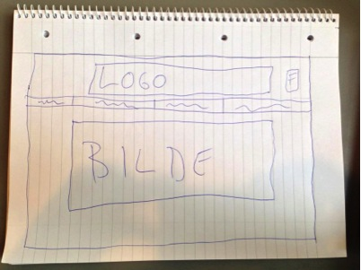

Prosjekt ideen
I tidlig fase av prosjektet ble vi enig om å lage et nettside som handlet om trening og kostholdt. Vi ønsker å rette oss mot studenter som målgruppe og lage en fengende og oversiktelig side til folk som vil komme i gang med det. På nettsiden ønsker vi å ha kart over treningsentrene i Oslo, informasjon om øvelser og kosthold.
Prototype av grensesnittet
Fordeling av arbeidsoppgaver
Vi ønsker å ha hovedansvar fordelt slikt:
- Henning: Hovedansvarlig for programmering
- Kristian: Innholdsansvarlig
- Ksenia: Administrativ leder
- Mea: Design ansvarlig
Arbeidsmetoden vi har bli enig om å bruke er tilnærmet Screm metoden. Vi har valgt å fordele hovedansvar men skal jobbe sammen på alle oppgaver vi har. Siden prosjektet ikke har lang varighet og alle på gruppen en tilnærmet enig og sluttresultatet passer metoden bra for oss.
Milepælsplan
- Forprosjektrapport skal være ferdig og leveres inn den 24. okt kl 23:59.
- Kode nettsiden og legge inn innholdt før den 7. nov.
- Sjekke at alle elementer fungerer er ferdig koda 14. nov.
- Bli ferdig til den 20. nov kl 23:59
- (SISTEFRIST) Levere inn alt før 24. nov kl 23:59
Teknologi
Vi har valgt å benytte oss av disse teknologiene basert på at det er det vi har arbeidet med i dette program faget og vi ønsker å øke vår kunnskap rundt disse teknologiene.
- Javascript
- php
- jquery
- html
- css
Vi ønsker å ha koder i GitHub så det er lett å jobbe sammen og se hvem som koda hva.